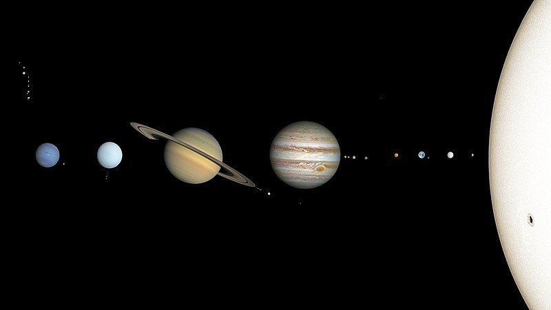
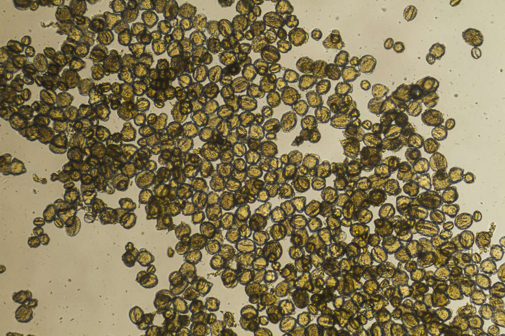

El sistema solar: qué es, cómo se formó y datos principales
¿Qué es el sistema solar? ¿Cuáles son las partes que lo conforman?
¿Dónde se encuentra el sistema solar dentro de la galaxia? ¿Cuáles son sus límites espaciales? ¿Cómo se formó el sistema solar?
El Universo es un lugar enorme. Sus dimensiones son tan colosalmente grandes que incluso resultan difíciles de imaginar para los astrónomos más experimentados.
Se trata de un lugar plagado de estrellas, nebulosas, galaxias, agujeros negros, planetas, lunas, asteroides y otros muchos tipos de objetos astronómicos.

La nieve rosa: un fenómeno bonito pero peligroso para el medio ambiente
La causante de esta coloración es la microalga 'Chlamydomonas nivalis', la cual tiñe la nieve de rojo y hace que se derrita más rápido.
La nieve rosa, también conocida como nieve roja, nieve de sangre o Watermelon snow (nieve sandía, en inglés),
lleva miles de años fascinando e inquietando a científicos y exploradores del mundo entero.

Movimiento browniano: del polen al ADN
Bajo el dominio de la energía térmica y de las colisiones elásticas,
ciertas partículas microscópicas como el polen o el polvo parecen estar vivas cuando se mueven de forma aleatoria en un fluido.
Llamado así en honor del botánico escocés Robert Brown, quien en 1827 realizó las primeras observaciones mientras estudiaba partículas de polen suspendidas en agua,
el movimiento browniano se ha convertido en una pieza clave para entender las propiedades y los comportamientos de los diferentes elementos a escala microscópica,
así como para el desarrollo de teorías fundamentales en física y química.
